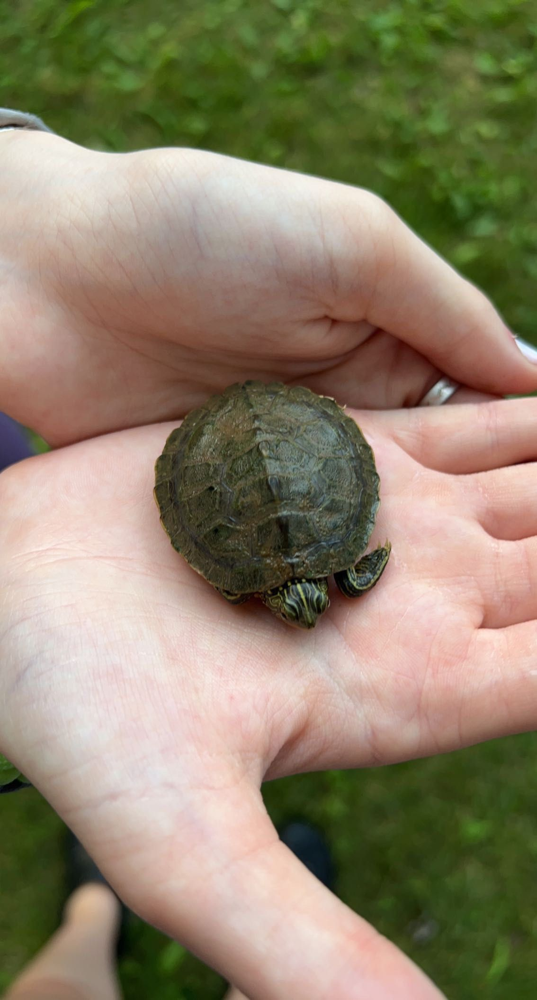
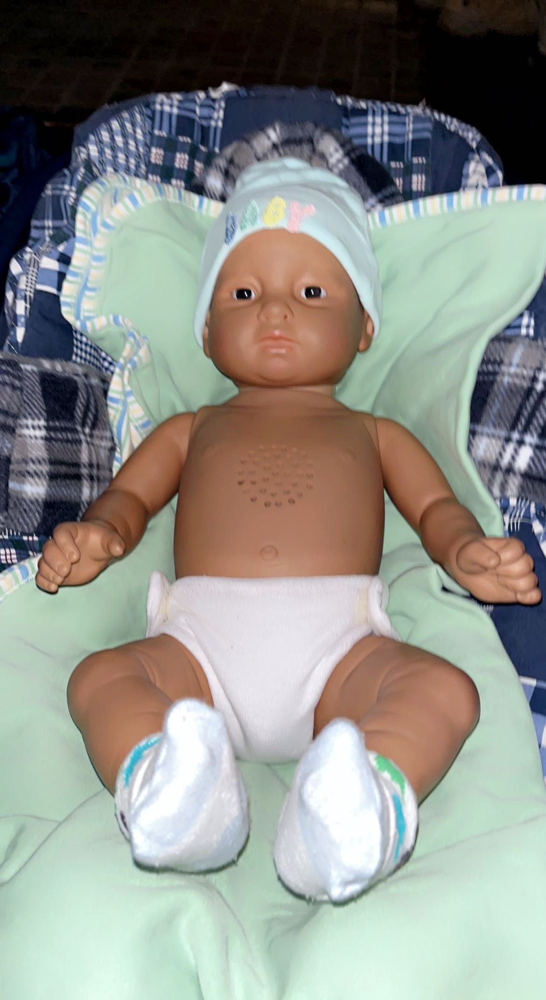
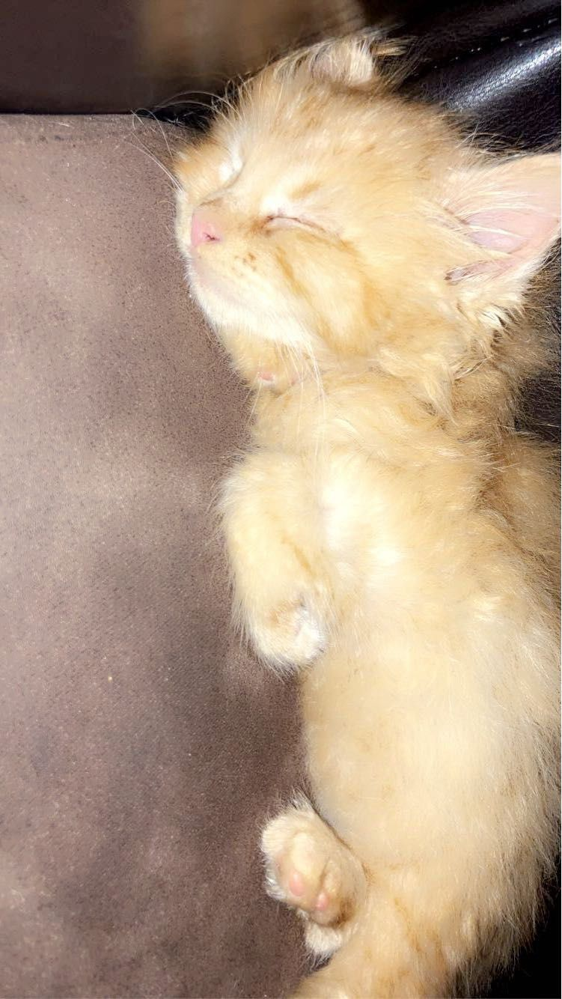
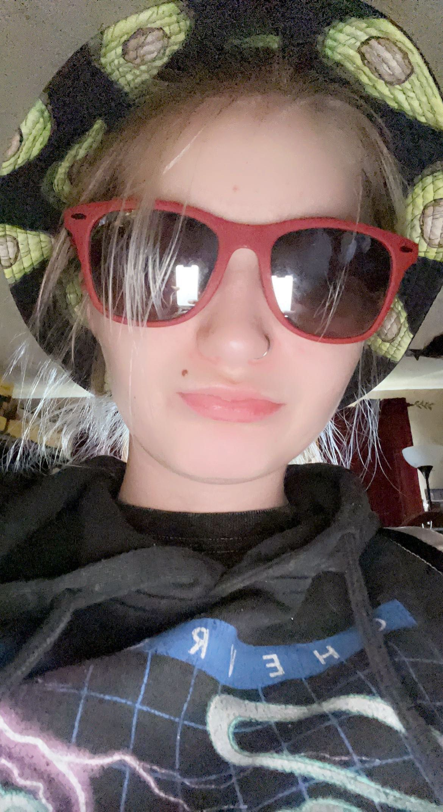

Memories
Home
Photos
Goals
About
Social Life

This is a turtle I caught at my Gram's house in the river. I actaully even had my best friend Abby with me when I caught it.

This is the baby I had to take care of for Child Development class. I named him Frankie, but I had to take him home twice because the first time he cried the whole time only because my teacher set him up wrong and I had to redo it.

This is how tiny Bandit was when we found him. My cousins had actually found him and brought him to us.

I was all ready to leave to go to camp and thought I looked pretty cool.